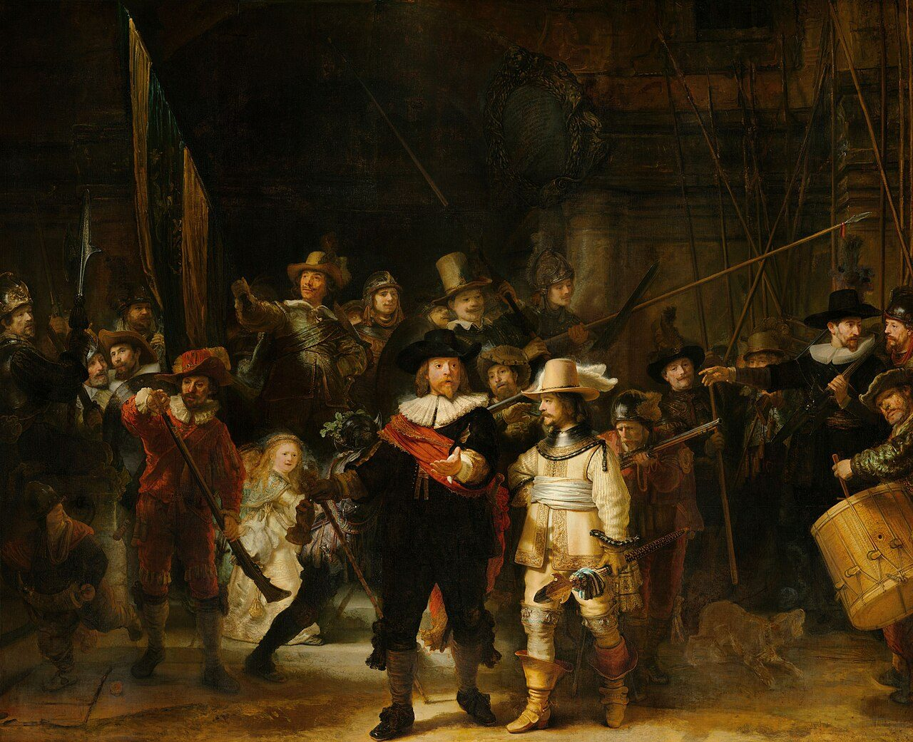
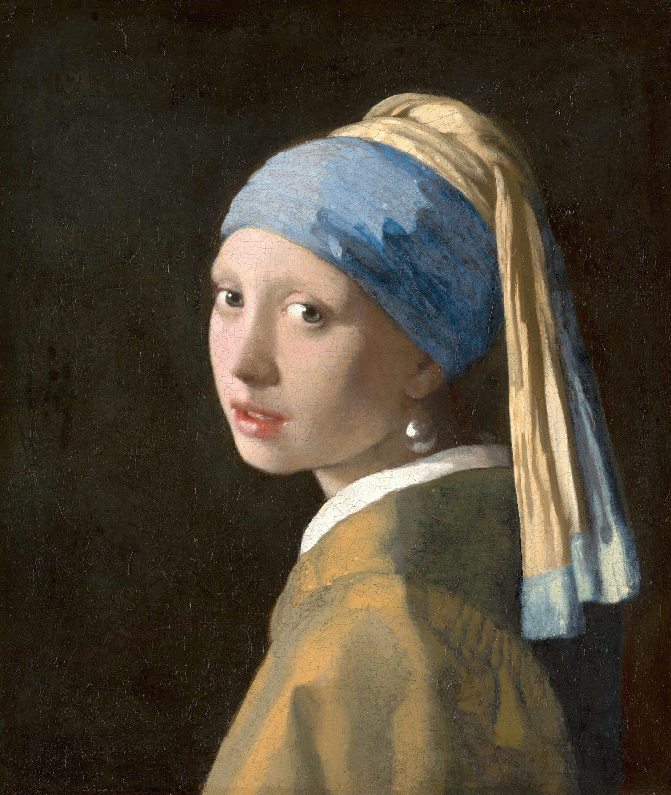

The Calling of Saint Matthew
BaroqueRomeOil painting
Baroque light becomes a full dramatic engine.
Open source / museum context ↗c. 1600 → 1700
Light, drama, spectacle, intimacy, and civic life


What to notice
Drama, light, movement, theatre, intimacy, and civic life reshape what painting and sculpture can do, even though Baroque spectacle and Dutch restraint are not quite the same thing.
Key works
Start with the image, then use the note to fix the main point in your mind.
Baroque light becomes a full dramatic engine.
Open source / museum context ↗
An unforgettable expansion of the Baroque story beyond the default shortlist.
Open source / museum context ↗
Baroque theater in sculpture and architecture together.
Open source / museum context ↗
Court painting becomes a puzzle about seeing.
Open source / museum context ↗
Public portraiture turns into movement, atmosphere, and drama.
Open source / museum context ↗
Quiet concentration and light can be as gripping as spectacle.
Open source / museum context ↗Where to go next